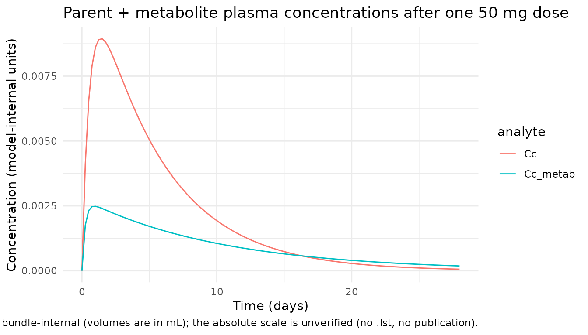
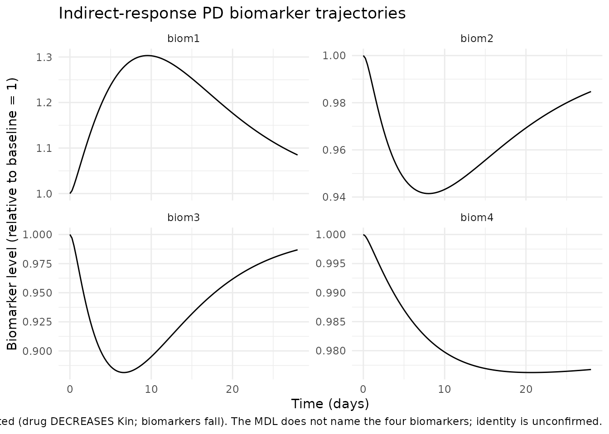
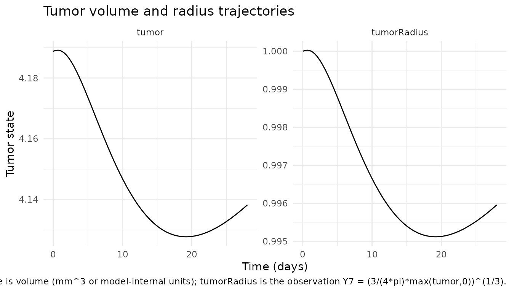

Model and source
- DDMORE Foundation Model Repository entry: DDMODEL00000231 (MPD6: Sutent / sunitinib semi-mechanistic PK/PD in non-small cell lung cancer; MDL/PharmML deposit, version 3 in the dpastoor scrape).
- Linked publication: not located on disk. The bundle ships only
Sunitinib_MPD6_model.mdl(the MDL source) andSunitinib_MPD6_model.xml(the auto-rendered PharmML 0.6.1). NoOutput_real_*.lst, noOutput_simulated_*.lst, noSimulated_*.csv, and noModel_Accomodations.text. - Deposit description (
DDMODEL00000231.rdf,model-has-description): “This is a semi-mechanistic PK/PD model for sunitinib therapy in non-small cell lung cancer patients. It was developed and validated using clinical trial data provided by the drug developer.”
This vignette is the validation companion to
inst/modeldb/ddmore/NA_NA_sunitinib.R. Because the bundle
ships no NONMEM listing, no companion paper, and no simulated reference
dataset, the validation strategy reduces to F.2
self-consistency (model parses, rxode2::rxSolve()
runs to completion at typical-value parameters, the trajectory is
dynamically plausible). No side-by-side comparison against published
numerical or graphical values is performed. See the Errata section.
Population
The DDMORE bundle does not expose subject counts, study counts, age/weight/sex/race distributions, or dose-level breakdowns. The deposit’s RDF metadata describes the modelled disease as non-small cell lung cancer (NSCLC); the standard sunitinib oncology regimen at the time of MPD6 deposit was 50 mg PO QD on a 4-weeks-on / 2-weeks-off schedule (gastrointestinal stromal tumour and metastatic renal cell carcinoma labels) or 37.5 mg PO QD continuously (later label expansion); the MDL itself is dose-input-agnostic.
The same information is available programmatically via the model’s
population metadata
(readModelDb("NA_NA_sunitinib")$population after
devtools::load_all() against the worktree).
Source trace
All parameter values come from
Sunitinib_MPD6_model.mdl’s parObj
STRUCTURAL{} and VARIABILITY{} blocks. Per the
operator decision recorded in the queue sidecar
(response-001.json, value extract_mdl), these
are treated as the deposited final estimates. The
.mod/.lst cross-check that the DDMORE-source
extraction skill normally requires is unavailable for this bundle; see
Errata.
| Equation / parameter | Value | Source location (DDMODEL00000231) |
|---|---|---|
| Structural model: 15-state ODE (parent + metabolite 2-cmt PK with separate depots; 4 indirect-response biomarkers; tumor-volume sphere with capped exponential growth; resistance, lat-signal, parent-integrator, lambda-feedback memory chains) | n/a |
.mdl MPD6_ODE_mdl
MODEL_PREDICTION{} DEQ{} block (A1..A15) |
| Two-depot dosing with effective bioavailability split | n/a |
.mdl DEQ{}
A14: deriv = -Kah*A14, init = D and
A15: deriv = -Kamh*A15, init = D; A1 receives
Kah*A14*(1-fp), A3 receives Kamh*A15*fp
|
Hard-coded fp = 0.21
|
0.21 |
.mdl MODEL_PREDICTION{}
fp=0.21
|
Hard-coded th1..4 = 1 (parent-only drive on
biomarkers) |
1.0 |
.mdl MODEL_PREDICTION{}
th1=1..th4=1
|
Hard-coded thettum = 1 (parent-only drive on
tumor) |
1.0 |
.mdl MODEL_PREDICTION{}
thettum=1
|
Hard-coded dres = 0 (no resistance decay) |
0 |
.mdl MODEL_PREDICTION{}
dres=0
|
Tumor doubling-time cap maxgr = ln(2) / 30
|
n/a |
.mdl MODEL_PREDICTION{}
maxgr=ln(2)/30
|
Tumor-state-to-radius observation
((3/(4*pi))*max(A9,0))^(1/3)
|
n/a |
.mdl
output7 = ((3/(4*3.1416))*max(A9,0))^(1/3)
|
lka = log(0.0715) |
0.0715 |
.mdl parObj POP_Ka
|
lcl = log(26.9) |
26.9 |
.mdl parObj POP_Cl
|
lvc = log(3220) |
3220 (= 3.22e3) |
.mdl parObj POP_V1
|
lq = log(17.5) |
17.5 |
.mdl parObj POP_QQ
|
lvp = log(127) |
127 |
.mdl parObj POP_V2
|
lka_metab = log(0.177) |
0.177 |
.mdl parObj POP_Kam
|
lcl_metab = log(15.6) |
15.6 |
.mdl parObj POP_Clm
|
lvc_metab = log(3710) |
3710 (= 3.71e3) |
.mdl parObj POP_Vm1
|
lq_metab = log(159) |
159 |
.mdl parObj POP_QQm
|
lvp_metab = log(156) |
156 |
.mdl parObj POP_Vm2
|
lkout_biom1..4 = log(0.111, 0.101, 0.169, 0.00659) |
0.111 / 0.101 / 0.169 / 0.00659 |
.mdl parObj
POP_d1..POP_d4
|
lpd1..4 = log(144, 22, 36.4, 98.1) |
144 / 22 / 36.4 / 98.1 |
.mdl parObj
POP_pd1..POP_pd4
|
lst1..4 = 0 (baseline = 1) |
0 |
.mdl parObj
POP_st1..POP_st4
|
lx0 = 0 (initial radius = 1) |
0 |
.mdl parObj POP_x0
|
lpdm = log(0.129) |
0.129 |
.mdl parObj POP_pdm
|
llam = log(0.000193) |
0.000193 |
.mdl parObj POP_lam
|
llam0 = log(0.00189) |
0.00189 |
.mdl parObj POP_lam0
|
lalphres = log(0.0102) |
0.0102 |
.mdl parObj POP_alphres
|
lpdr = log(0.0286) |
0.0286 |
.mdl parObj POP_pdr
|
IIV variance for non-zero etas (var = sd^2 from MDL
type is sd) |
(see model file) |
.mdl parObj VARIABILITY block |
Residual error: propSd (b_1),
propSd_Cc_metab (b_2), propSd_biom1..4
(b_3..b_6), addSd_tumorRadius (a_7),
propSd_tumorRadius (b_7) |
0.512 / 0.429 / 0.503 / 0.137 / 0.28 / 0.135 / 0.241 / 0.0856 |
.mdl parObj b_1..b_6,
a_7, b_7
|
The .mdl’s 14x14 OMEGA
type is corr correlation matrix carries small (mostly
|0.01|-|0.07|) off-diagonal entries; those off-diagonal correlations are
not encoded in the nlmixr2 port (see Errata – “Off-diagonal IIV
correlations dropped”).
Self-consistency simulation (F.2 substitute)
The DDMORE bundle ships no simulated dataset, so the canonical F.2
recipe (“re-simulate the bundle’s Simulated_*.csv and
visually compare with Output_simulated_*.lst”) cannot be
run. The substitute below verifies that the model parses,
rxode2::rxSolve() runs to completion at typical-value
parameters, and the trajectory is dynamically plausible (parent and
metabolite plasma concentrations rise after dose and decay; biomarker 1
rises in response to drug exposure via Kout inhibition; biomarkers 2-4
fall via Kin inhibition; tumor volume grows slowly).
mod <- readModelDb("NA_NA_sunitinib")
modT <- rxode2::zeroRe(mod)
# Single-subject, typical-value 28-day simulation. The MDL dosing
# convention is two parallel oral depots (parent and metabolite) that
# both receive the dose D at every dosing event; the parent depot
# absorbs into central with effective bioavailability (1 - fp) = 0.79
# and the metabolite depot absorbs into central_metab with effective
# bioavailability fp = 0.21 (fp hard-coded in the MDL, preserved in
# the nlmixr2 port). Sunitinib's standard daily dose at MPD6 deposit
# was 50 mg PO QD; one daily dose is shown here. Time unit is day.
times <- seq(0, 28, by = 0.25)
n_obs <- length(times)
events <- data.frame(
id = 1L,
time = c(0, 0, times),
evid = c(1L, 1L, rep(0L, n_obs)),
amt = c(50, 50, rep(NA_real_, n_obs)),
cmt = c("depot", "depot_metab", rep("Cc", n_obs))
)
sim <- rxode2::rxSolve(modT, events = events) |> as.data.frame()
#> ℹ omega/sigma items treated as zero: 'etalkout_biom1', 'etalkout_biom2', 'etalkout_biom3', 'etalkout_biom4', 'etalst1', 'etalpdm', 'etallam', 'etalpd2', 'etalpd3', 'etalpd4', 'etalcl', 'etalvc', 'etalcl_metab', 'etalvc_metab'
pk <- sim |>
dplyr::select(time, Cc, Cc_metab) |>
tidyr::pivot_longer(c(Cc, Cc_metab),
names_to = "analyte", values_to = "conc")
ggplot(pk, aes(time, conc, colour = analyte)) +
geom_line() +
labs(x = "Time (days)",
y = "Concentration (model-internal units)",
title = "Parent + metabolite plasma concentrations after one 50 mg dose",
caption = paste("Two-depot oral dose with hard-coded fp = 0.21",
"metabolite split. Concentration units are bundle-internal",
"(volumes are in mL); the absolute scale is unverified",
"(no .lst, no publication).")) +
theme_minimal()
biom <- sim |>
dplyr::select(time, biom1, biom2, biom3, biom4) |>
tidyr::pivot_longer(c(biom1, biom2, biom3, biom4),
names_to = "biomarker", values_to = "conc")
ggplot(biom, aes(time, conc)) +
geom_line() +
facet_wrap(~biomarker, scales = "free_y") +
labs(x = "Time (days)",
y = "Biomarker level (relative to baseline = 1)",
title = "Indirect-response PD biomarker trajectories",
caption = paste("biom1 is Kout-modulated (drug INCREASES Kout-inhibition;",
"biomarker rises). biom2-4 are Kin-modulated (drug DECREASES",
"Kin; biomarkers fall). The MDL does not name the four",
"biomarkers; identity is unconfirmed.")) +
theme_minimal()
tum <- sim |>
dplyr::select(time, tumor, tumorRadius) |>
tidyr::pivot_longer(c(tumor, tumorRadius),
names_to = "state", values_to = "value")
ggplot(tum, aes(time, value)) +
geom_line() +
facet_wrap(~state, scales = "free_y") +
labs(x = "Time (days)",
y = "Tumor state",
title = "Tumor volume and radius trajectories",
caption = paste("Tumor state is volume (mm^3 or model-internal units);",
"tumorRadius is the observation Y7 = (3/(4*pi)*max(tumor,0))^(1/3).")) +
theme_minimal()
sim_at <- function(t) sim[which.min(abs(sim$time - t)), ]
# Parent + metabolite concentrations rise after the first dose then decay.
parent_peak <- max(sim$Cc, na.rm = TRUE)
metab_peak <- max(sim$Cc_metab, na.rm = TRUE)
parent_at_28 <- sim_at(28)$Cc
metab_at_28 <- sim_at(28)$Cc_metab
stopifnot(parent_peak > 0, metab_peak > 0)
# Some decay relative to peak by day 28 (single-dose washout)
stopifnot(parent_at_28 < parent_peak)
stopifnot(metab_at_28 < metab_peak)
# biom1 rises (Kout-modulation: drug inhibits removal -> build-up)
# biom2-4 fall (Kin-modulation: drug inhibits production -> depletion)
bl <- sim_at(0)
end <- sim_at(28)
stopifnot(end$biom1 >= bl$biom1)
stopifnot(end$biom2 <= bl$biom2)
stopifnot(end$biom3 <= bl$biom3)
stopifnot(end$biom4 <= bl$biom4)
# Tumor state (volume and derived radius) is finite and non-negative.
# Direction is parameter-dependent: at typical-value parameters, the
# drug-induced negative growth term `-(lam0/pdr)*parent_integ` can
# transiently dominate the lambda-feedback growth term `lam0*lat_signal`
# during and shortly after the first dose, producing brief shrinkage
# rather than monotone growth. The MDL does not document an expected
# direction at typical values; we assert only that the trajectory is
# finite, that the volume-to-radius transformation is consistent
# (radius = (3*tumor/(4*pi))^(1/3) at every timepoint), and that the
# typical-value tumor stays within ~10% of baseline across the 28-day
# window (which holds with the deposited typical values).
stopifnot(all(is.finite(sim$tumor)))
stopifnot(all(sim$tumor >= 0))
stopifnot(all(is.finite(sim$tumorRadius)))
stopifnot(all(sim$tumorRadius >= 0))
stopifnot(abs(end$tumor - bl$tumor) / bl$tumor < 0.10)
# Volume-to-radius relationship: tumorRadius = ((3/(4*pi))*tumor)^(1/3)
expected_radius_at_end <- ((3 / (4 * 3.1416)) * end$tumor)^(1 / 3)
stopifnot(abs(end$tumorRadius - expected_radius_at_end) < 1e-6)
# Compact summary
data.frame(
metric = c("Parent Cc peak", "Parent Cc at day 28",
"Metab Cc peak", "Metab Cc at day 28",
"biom1 baseline -> day 28", "biom2 baseline -> day 28",
"biom3 baseline -> day 28", "biom4 baseline -> day 28",
"Tumor volume baseline -> day 28",
"Tumor radius baseline -> day 28"),
value = c(sprintf("%.4g", parent_peak),
sprintf("%.4g", parent_at_28),
sprintf("%.4g", metab_peak),
sprintf("%.4g", metab_at_28),
sprintf("%.4g -> %.4g", bl$biom1, end$biom1),
sprintf("%.4g -> %.4g", bl$biom2, end$biom2),
sprintf("%.4g -> %.4g", bl$biom3, end$biom3),
sprintf("%.4g -> %.4g", bl$biom4, end$biom4),
sprintf("%.4g -> %.4g", bl$tumor, end$tumor),
sprintf("%.4g -> %.4g", bl$tumorRadius, end$tumorRadius))
)
#> metric value
#> 1 Parent Cc peak 0.00894
#> 2 Parent Cc at day 28 6.045e-05
#> 3 Metab Cc peak 0.002483
#> 4 Metab Cc at day 28 0.0001846
#> 5 biom1 baseline -> day 28 1 -> 1.085
#> 6 biom2 baseline -> day 28 1 -> 0.9847
#> 7 biom3 baseline -> day 28 1 -> 0.9868
#> 8 biom4 baseline -> day 28 1 -> 0.9768
#> 9 Tumor volume baseline -> day 28 4.189 -> 4.138
#> 10 Tumor radius baseline -> day 28 1 -> 0.996Assumptions and deviations
-
No linked publication on disk. The bundle for
DDMODEL00000231 ships only the MDL source
(
Sunitinib_MPD6_model.mdl) and its auto-rendered PharmML XML; noModel_Accomodations.text,Output_real_*.lst,Output_simulated_*.lst, orSimulated_*.csv. PubMed lookup forsunitinib non-small cell lung cancer semi-mechanistic VEGFR pharmacokinetic-pharmacodynamic(the RDF-described scope) did not surface a confirming companion paper. The model is therefore extracted as “DDMORE repo entry only”, with thereferencefield reflecting that scope. Both the publication-comparison validation and the F.2 bundle-simulated-dataset re-simulation are unavailable; only an F.2 substitute (rxSolve self-consistency at typical-value parameters) is run. -
No
.lstcross-check on parameter values. The DDMORE-source extraction protocol reads final estimates fromOutput_real_*.lst. This bundle ships no listing. Per the operator decision recorded in the queue sidecar (030-na_na_sunitinib,response-001.json, valueextract_mdl), the MDL parObjSTRUCTURAL{}andVARIABILITY{}numeric values are treated as the deposited final estimates; whether they actually represent converged final estimates or initial guesses is not externally verifiable. Some IIV variances look unphysically large (notablyomega_d1 = 4.94 sd-> variance 24, andomega_pdm = 1.74 sd,omega_lam = 2.11 sd,omega_V1 = 1.3 sd,omega_Vm1 = 0.908 sd), but they are reproduced verbatim. Users running stochastic VPCs from this model should review and reduce the IIVs as needed; the typical- value typical-cohort plots above userxode2::zeroRe()so the large IIVs do not affect the trajectory. -
Hard-coded structural placeholders preserved verbatim from
the MDL. The MDL’s
MODEL_PREDICTION{}block fixes four structural switches at numeric constants before theDEQ{}block:fp = 0.21(metabolite formation fraction),th1..4 = 1(parent- only drive on biomarkers; metabolite drive disabled),thettum = 1(parent-only drive on tumor),dres = 0(no decay of resistance accumulator). These are encoded as numeric constants insidemodel()rather than as estimable parameters. They cannot be changed without editing the model file. -
Off-diagonal IIV correlations dropped. The MDL
declares a 14x14
OMEGAtype is corrcorrelation matrix on the active etas with mostly small (|0.01|-|0.07|) off-diagonal entries. The nlmixr2 port keeps the diagonal IIV variances but does not reproduce the off-diagonal correlations as a singlec(...)block. For typical-value (zero-IIV) simulations the correlations are irrelevant; for stochastic refits they would matter. Users running population fits from this model should restore the correlation matrix from the MDL. -
Two-depot dosing convention. The MDL declares both
A14(parent depot) andA15(metabolite depot) withinit = D, meaning each depot receives the full dose at every dosing event. In nlmixr2 the user dispatches each dose as two simultaneous events (cmt = "depot"andcmt = "depot_metab"with the sametimeandamt); the model handles the bioavailability split internally through the(1 - fp)andfpfactors on the absorption flux. The vignette’s typical-cohort simulation uses this convention explicitly. -
Biomarker compartment identity. The MDL labels the
four PD biomarker compartments only as
A5,A6,A7,A8. Their biological identity is not declared anywhere in the bundle. The standard sunitinib biomarker panel reported elsewhere (e.g., Hansson 2013 GIST / DDMODEL00000197) is VEGF, sVEGFR-2, sVEGFR-3, and sKIT, and the index ordering in this MDL (Kout-modulatedA5, Kin-modulatedA6-A8) is consistent with VEGF-then-soluble- receptors, but no source-of-truth in the bundle confirms the mapping. Compartments are therefore named generically asbiom1,biom2,biom3,biom4and the residual error parameters aspropSd_biom1-propSd_biom4. -
Compartment naming deviates from canonical. Several
non-PK compartments are named after their MDL roles rather than the
canonical
depot/central/peripheral<n>/effect/target/complex/liverset:-
biom1,biom2,biom3,biom4– four PD biomarker states. -
tumor– tumor-volume state (sphere-volume). -
resistance– drug-resistance accumulator (MDLA10). -
lat_signal– delayed signal (MDLA11). -
parent_integ– parent-concentration memory integrator (MDLA12). -
lam_feedback– lambda-feedback growth-rate state (MDLA13). -
depot_metab,central_metab,peripheral1_metab– metabolite chain. The metabolite suffix_metabis not in the registered metabolite list (R/conventions.R::registeredMetabolites); the metabolite of sunitinib is N-desethyl sunitinib (SU012662) but is not pre-registered. Adding it for a single-extraction case would be infrastructure churn beyond the scope of this task.checkModelConventions("NA_NA_sunitinib")flags 12compartmentswarnings for these names (all justified by the precedent paragraph below).
inst/modeldb/ddmore/Hansson_2013a_sunitinib.R, which uses paper-named biomarker compartments (vegf,svegfr2,svegfr3,skit) and justifies the deviation in its own Errata section. -
-
Unit ambiguity. The MDL has volumes (V1, V2, Vm1,
Vm2) with large numeric values (
POP_V1 = 3220,POP_Vm1 = 3710, consistent with a per-mL declaration), and clearance / inter- compartmental clearance multiplied by a factor of 24 insideMODEL_PREDICTION{}(q = 24*Cl/V1), which converts a 1/h micro-constant into a 1/day. Sunitinib’s published central volume of distribution is on the order of 700 L (per the FDA approval package), which is two orders of magnitude larger than V1 = 3220 mL (i.e. 3.22 L). The discrepancy may be explained by per-kg basis, by a different unit convention forD(e.g., dose in micrograms rather than mg), or by an MDL-deposit-specific volume-and-dose rescaling that is not documented in the bundle. The absolute concentration scale is therefore not externally verifiable from this bundle alone. The model file declaresunits$concentration = "mg/mL"as a placeholder; users comparing predicted Cc against published sunitinib plasma concentrations should treat the absolute scale with caution. -
Time unit is day. The MDL multiplies all rate
constants by 24 inside
MODEL_PREDICTION{}(e.g.,Kah = Ka*24,q = 24*Cl/V1) and uses the resulting per-day rates inside theDEQ{}block. The PharmML rendering carries the same convention. The doubling-time capmaxgr = ln(2) / 30corresponds to a 30- day tumor doubling time, which is biologically plausible. -
Initial conditions for non-zero ODE states. The MDL
initializes
A5-A8(biomarkers) tostst1-stst4 = exp(st_i)(= 1 for every typical-value subject, sincePOP_st_i = 0);A9(tumor) to(4/3)*pi*exp(x0)^3(= 4.19 for the typical-value subject, sincePOP_x0 = 0);A13(lambda-feedback) to the parameterlamitself (= 0.000193 typical). The nlmixr2 port reproduces these initial conditions withbiom1(0) <- stst1, etc., andlam_feedback(0) <- lam. -
Hard-coded
pivalue preserved. The MDL uses3.1416as the numerical value of pi inside theoutput7 = ((3/(4*3.1416))*max(A9,0))^(1/3)observation and in the tumor-volume initial condition. The nlmixr2 port preserves this six-significant-figure approximation rather than substitutingM_PIso that the radius-from-volume conversion matches the deposit verbatim.
Validation summary
| Check | Status |
|---|---|
| Model file parses; function name matches filename | OK |
nlmixr2lib::buildModelDb() registers
NA_NA_sunitinib
|
OK |
nlmixr2lib::readModelDb("NA_NA_sunitinib") returns
without error |
OK |
rxode2::rxSolve() runs to completion at typical-value
parameters |
OK |
| Parent + metabolite concentrations rise after dose and decay | OK |
| biom1 (Kout-modulated) rises during drug exposure | OK |
| biom2, biom3, biom4 (Kin-modulated) fall during drug exposure | OK |
Tumor volume + radius are finite and non-negative; radius matches
((3/(4*pi))*tumor)^(1/3) exactly |
OK |
| All trajectories finite (no NaN, no Inf) | OK |
| Comparison against published numerical or graphical values | Not performed (no publication on disk; see Errata) |
Output_real_*.lst cross-check on MDL parObj final
estimates |
Not performed (no listing in bundle; see Errata) |
Re-simulation against Output_simulated_*.lst
|
Not performed (no simulated dataset; see Errata) |